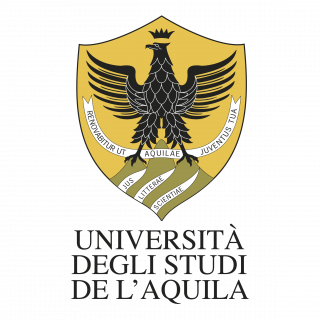
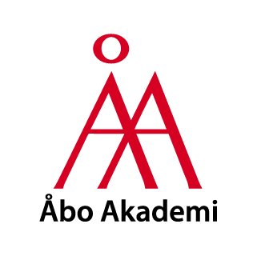

MSc in Computer Science - Specialized in Model-Driven
Engineering
University of L’Aquila • Italy •
2025–Present
Focus: LLMs, Architecting Intelligent Systems, Software Architecture

MSc (Technology) in Computer Engineering
Åbo Akademi University • Finland •
2024–2025
Focus: Computer Vision, Data Science, Data-Driven Computing
Architecture